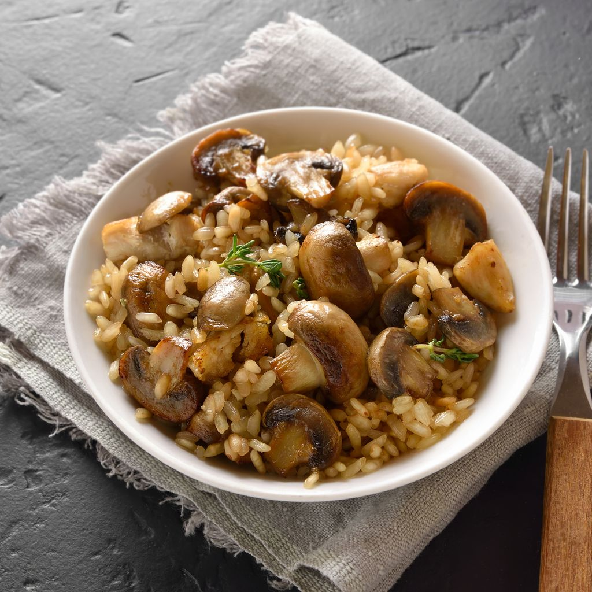

Risotto

Description
Découvrez la recette de risotto aux champignons, une recette facile pour déguster
vos champignons préférés avec un bon riz bien crémeux cuit dans le vin et la crème fraîche.
Ingredients
- Riz arborio spécial risotto 250g
- Bouillon de légumes 2 cubes
- Vin blanc 10cL
- Parmesan 100g
- Beurre 1 noix
- Persil 3 branches
- Champignons 300g
- Oignon 1
- Crème fraîche 15cL
- Ail 1 gousse
- Huile d'olive 1càs
Steps
- Préparez les champignons. Passez-les rapidement sous un filet d'eau, essuyez-les
et détaillez-les en gros morceaux. Faites fondre une noix de beurre et faites-y
revenir la gousse d'ail émincée pendant 2 minutes. Ajoutez les champignons et
laissez-les cuire environ 3 minutes en ajoutant le persil lavé et ciselé à la fin.
Ajoutez 3 cuillères à soupe de vin blanc et laissez cuire 2 minutes jusqu'à
ce qu'il réduise. Ajoutez la crème fraîche et mélangez. Salez, poivrez et réservez.
- Faites bouillir un litre d'eau dans lequel vous diluerez les cubes de bouillon.
Dans une sauteuse, faites chauffer l'huile d'olive pour y faire blondir l'oignon
émincé pendant 3 minutes. Ajoutez le riz et laissez-le cuire en remuant pendant
2 minutes jusqu'à ce qu'il soit un peu transparent.
- Ajoutez 10 cl de vin blanc (1/2 verre) et une fois qu'il est absorbé par le riz,
ajoutez une louche de bouillon, puis mélangez. Une fois que le bouillon est bien
absorbé, ajoutez une nouvelle louche, et ainsi de suite jusqu'à épuisement du
bouillon (environ 20 bonnes minutes).
- Ajoutez la moitié du parmesan et les champignons, attendez 2 minutes puis mélangez vivement.
- Servez très chaud avec le reste du parmesan.